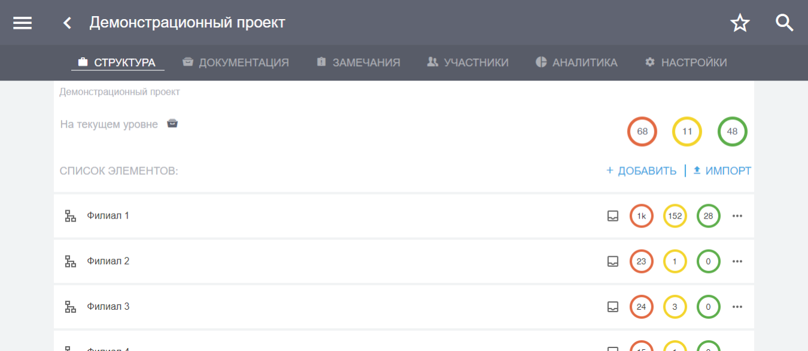

Установка приложения и вход в систему¶
Начало работы¶
Программный комплекс состоит из серверной части, веб-интерфейса и мобильных приложений.
Вы можете открыть веб-приложение в браузере по адресу app.plotpad.com или просто перейдите по ссылке.
Если вы работаете в компании, которая обладает действующей лицензией, то вам должны были передать ссылку, по которой вам надо заходить. Она выглядит как обычная, но вместо app там пишется индивидуальное наименование для вашей компании:
https://{индивидуальное_наименование}.plotpad.com
Мобильные приложения можно скачать по ссылкам:
Серверная часть отвечает за хранение и обработку данных и находится в безопасном дата-центре провайдера Selectel.
Вход в систему¶
Пользовательское приложение доступно всем участникам проекта. В нем осуществляется работа непосредственно с проектом, проектной документацией, замечаниями, предписаниями, отчетами и др. Для входа в приложение:
на персональном компьютере пройдите по ссылке из прошлого пункта,
на планшете/смартфоне установите по ссылкам из прошлого пункта приложение «СтройКонтроль» и запустите его.
Если вы перешли по общей ссылке, которая начинается на app, или входите в приложение через телефон, то вам необходимо ввести полный URL вашей компании.
{kind=link}
Для входа в приложение введите свой e-mail, пароль и нажмите кнопку «Войти» (Рис. 2).

После этого вы попадете на главную страницу (Рис. 3).
{kind=link}
Данные — e-mail и пароль — для доступа в приложение предоставляются администратором системы. Всю первоначальную настройку программы, ввод необходимых для работы данных, создание проектов, структуры и загрузку документации производит только администратор системы.
Примечание
Администратор системы – это сотрудник клиента, имеющий расширенные права на работу с программным комплексом «СтройКонтроль».
Он имеет право создавать проекты, структуру, загружать документацию по проекту, создавать пользователей и наделять их правами, создавать и присуждать сотрудникам роли на проекте и производить прочие настройки. По всем вопросам работы в программном комплексе обращайтесь к администратору системы.
Примечание
Вход в административную часть программного комплекса описывается в соответствующем разделе документации администратора: Вход в систему администратора.